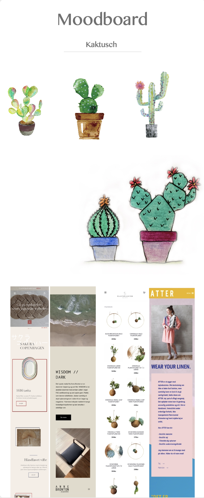
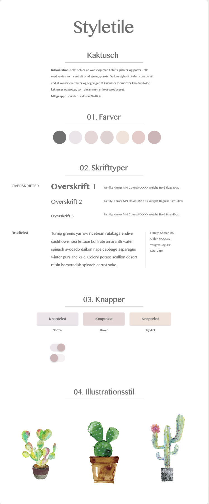
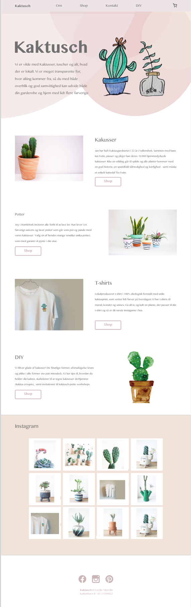

04
Animation

Introduktion
UX
I forløbet “Grundlæggende Web” fik vi sat brugeren i centrum af vores arbejde, fremfor at designe efter mavefornemmelse. Det gjorde vi ved at skabe en t-shirt webshop gennem Dobbelt Diamond-principper (Discover, Define, Develop, Deliver), hvor vi først researchede både marked, produkt og målgruppe. Dette førte til en idéudvikling, som blev til første bud på en løsning i form af en klikbar prototype. Denne testede vi på brugere og kørte iterative processer på, for at optimere både form og indhold til den specifikke målgruppes behov. Til idéudviklingen kørte vi et mini Google Design Sprint, hvor vi kom igennem øvelser som Lightning Demos, Crazy 8’s og Solution Sketches.
Indledende øvelser
Research og test
Vi startede en induktiv researchproces gennem deskresearch, hvor vi metodisk og kildekritisk indsamlede viden på tværs af fora, blogs, artikler, rapporter etc. En metode, der kan hjælpe til både at åbne og systematisere desk research kan være Social Listening, hvor man gennem Bolean Search Queries sørger på tværs af sociale og traditionelle online medier. I deskresearch kan man med fordel undersøge både historisk og samtids-indsigter for at forstå både best practises og trends.
Observation som metode er en god måde at få brugerens umiddelbare tanker, uden for meget interaktion. Det kan dog være svært at skabe en fuldstændig naturlig situation, hvor brugeren ikke er opmærksom på, at de bliver observeret. Gennem What-How-Why-metoden undersøgte hinandens færd på andre webshops, hvor jeg blandt andet lærte at filtre og kategorier på webshops er vigtige, men det er samtidig her brugere kan blive frustreret, hvis han/hun ikke kan genkende opdelingen, zoomfunktion kan være med til at bekræfte et potentielt købsvalg og tydelige information om betalings- og leveringsmetoder kan være afgørende i den sidste del af beslutningsprocessen.
Interviews bruges til at opnår kvalitative indsigter om brugerens oplevelse og det er her, man ofte kan få svar på sine “hvorfor’er”. Man kan dele interviewet op i “styret” og “ikke-styret”, hvor jeg har bedst erfaring med en interviewform midt imellem; semi-styret. Her har man gjort sig klare tanker om hvilke kategorier, man vil undersøge, men man giver samtidig plads til at brugeren kan styre samtalen i retninger, man ikke selv havde tænkt, da det ofte er her guldet gemmer sig. Derudover får man typisk bedst empiri, hvis man laver interviewet som et etnografisk interview, hvor man inkluderer observationer af deltageren i deres daglige miljø. For at få volume bag indsigterne, kan man passende bruge spørgeskemaundersøgelser, hvor man kan få bekræftet eller afkræftet sine hypoteser. Ofte bruger man kvalitative og kvantitative metoder skiftevis, så vi både ser helikopterperspektivet og når helt ned i maskinrummet.
Det færdige produkt: Kaktusch
Protptype
I løbet af min research og idé-fase landede jeg på et koncept, der hed Kaktusch - en webshop, der solgte kaktusser og t-shirts med kaktus-tegninger i et instagram-venligt univers.
Moodboard

Styletile

Eget design

Se live
Det har jeg lært
Værktøjer og ressourcer
Adobe XD
Adobe Color wheel
Webfonts
W3-validator
W3 Schools
Unsplash
Google Forms/Survey Monkey
Metoder og produktioner
Moodboard
Stiletyle
Splashbilleder
Favicon
Copy- og micro-copywriting
Prototyping (low og high fidelity)
Brugertest (eks: Tænke-højt-test, A/B-testing)
Deskresearch
Spørgeskeamer
Observationsstudier
Interviews
Google Design Sprint
Brugerrejser
Analyse og formidling af indsigter
Teori
Farvelære
Mobile First
Webdesign koncentioner
Stilarter
Grafisk analyse
Graphic Design Foundations
Research og indsamling af loblive billeder
Dobbelt Diamond
Design Thinking
User Experience (UX)
UI-konventioner (søgefelts placering, global navigation etc.)
Målgruppeanalyse
USP’er
Informations Arkitektur
Kodning
HTML
Layoutdiagram
Nesting
Syntaks
Semantik
Atributter
Debugging
CSS
Block og inlineelementer
Boxmodel
Mediaqueries
Margin, Border og Padding
ID og Classes